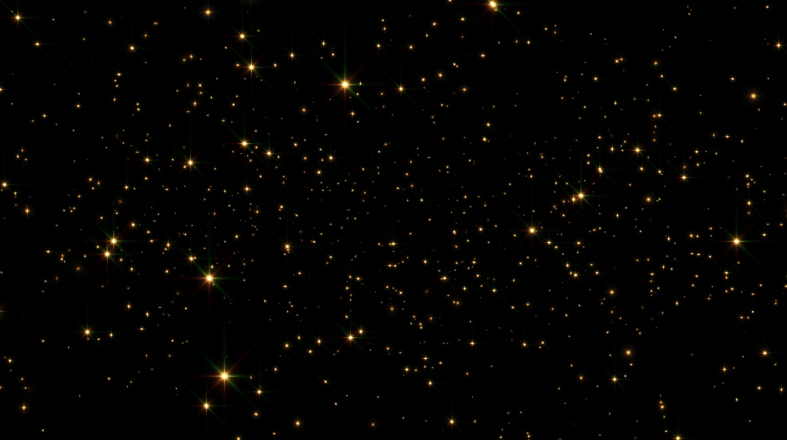
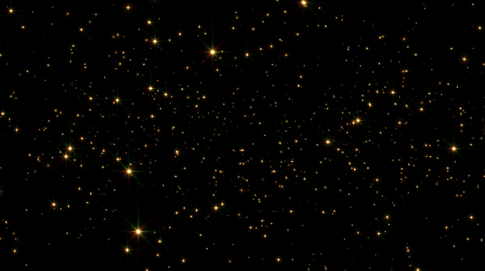

Pleyades
Las Pléyades o Las siete hermanas es un asterismo de un cúmulo estelar abierto que contiene estrellas calientes de tipo espectral B, de corta edad, ubicadas en la constelación de Tauro. Está entre los cúmulos estelares más cercanos a la Tierra, y es el cúmulo más visible a simple vista en el cielo nocturno.
El cúmulo está dominado por estrellas calientes extremadamente azules y luminosas que se han formado en los últimos 120 millones de años. El polvo que forma una débil nebulosidad de reflexión alrededor de las estrellas más brillantes se pensó en un principio que provenía de una disgregación de la propia formación del cúmulo (de ahí el nombre alternativo para nebulosa Maia en vez de estrella Maia), pero ahora se sabe que es una nube de polvo no relacionada en el medio interestelar, a través de la cual las estrellas están pasando actualmente. Y lo anterior se basa en los diferentes valores obtenidos de la velocidad radial de las Pléyades, y de la velocidad radial de la nebulosa que pareciera envolverlas. Simulaciones por ordenador han mostrado que las Pléyades se formaron probablemente a partir de una configuración compacta que se asemeja a la nebulosa de Orión. Los astrónomos estiman que el grupo va a sobrevivir aproximadamente durante otros 250 millones de años, tiempo después del cual se dispersará debido a las interacciones gravitacionales en su entorno de tipo galáctico.
.jpg)

Planetas
 Un planeta es un cuerpo celeste que gira alrededor de una estrella, y que tiene suficiente masa para alcanzar un equilibrio hidrostático (entre la fuerza de gravedad y la energía que genera su núcleo). Este equilibrio le permite que mantenga su forma de esfera, que domine órbita (impide que otros cuerpos invadan su recorrido) y que no emita luz propia, sino que refleje la luz de la estrella alrededor de la que gravita.
Desde que Plutón fue descubierto en 1930 fue considerado planeta hasta el 2006 cuándo, luego de un intenso debate internacional, se decidió recategorizar a Plutón como un “planeta enano” del sistema solar debido a que no cumple con una de las características para ser considerado planeta: no tiene dominancia orbital (su órbita no está libre de otros cuerpos en su recorrido y tiene cinco satélites que presentan el mismo tipo de órbita). Plutón es un planeta enano, de características rocosas y de tipo exterior porque es el cuerpo más alejado del Sol. Se han reconocido otros planetas enanos, además de Plutón, como por ejemplo, Ceres, Heumea, Makemake y Eris.
Un satélite natural es un cuerpo celeste que gira alrededor de otro astro (en general, de un planeta) y lo acompaña en su órbita alrededor de la estrella. Se caracteriza por ser sólido, de menor tamaño que el astro al que orbita y puede ser de aspecto brillante u opaco. Algunos planetas pueden tener varios satélites naturales que se mantienen unidos por las fuerzas de gravedad recíprocas.
 El satélite natural de nuestro planeta es la Luna, su tamaño es un cuarto de diámetro de la Tierra y es el quinto satélite más grande del sistema solar. Se encuentra a una distancia orbital de treinta veces el diámetro de la Tierra. La Luna tarda veintisiete días en dar la vuelta alrededor del planeta y en dar la vuelta sobre su propio eje y, por eso, siempre se ve la misma cara lunar desde la superficie terrestre.
Un satélite natural no es lo mismo que un satélite artificial. Este último es fabricado por el ser humano, también se mantiene en órbita alrededor de cuerpos del espacio y, una vez que finaliza su vida útil, queda orbitando como basura espacial o puede desintegrarse si atraviesa la atmósfera a su retorno.
Un planeta es un cuerpo celeste que gira alrededor de una estrella, y que tiene suficiente masa para alcanzar un equilibrio hidrostático (entre la fuerza de gravedad y la energía que genera su núcleo). Este equilibrio le permite que mantenga su forma de esfera, que domine órbita (impide que otros cuerpos invadan su recorrido) y que no emita luz propia, sino que refleje la luz de la estrella alrededor de la que gravita.
Desde que Plutón fue descubierto en 1930 fue considerado planeta hasta el 2006 cuándo, luego de un intenso debate internacional, se decidió recategorizar a Plutón como un “planeta enano” del sistema solar debido a que no cumple con una de las características para ser considerado planeta: no tiene dominancia orbital (su órbita no está libre de otros cuerpos en su recorrido y tiene cinco satélites que presentan el mismo tipo de órbita). Plutón es un planeta enano, de características rocosas y de tipo exterior porque es el cuerpo más alejado del Sol. Se han reconocido otros planetas enanos, además de Plutón, como por ejemplo, Ceres, Heumea, Makemake y Eris.
Un satélite natural es un cuerpo celeste que gira alrededor de otro astro (en general, de un planeta) y lo acompaña en su órbita alrededor de la estrella. Se caracteriza por ser sólido, de menor tamaño que el astro al que orbita y puede ser de aspecto brillante u opaco. Algunos planetas pueden tener varios satélites naturales que se mantienen unidos por las fuerzas de gravedad recíprocas.
 El satélite natural de nuestro planeta es la Luna, su tamaño es un cuarto de diámetro de la Tierra y es el quinto satélite más grande del sistema solar. Se encuentra a una distancia orbital de treinta veces el diámetro de la Tierra. La Luna tarda veintisiete días en dar la vuelta alrededor del planeta y en dar la vuelta sobre su propio eje y, por eso, siempre se ve la misma cara lunar desde la superficie terrestre.
Un satélite natural no es lo mismo que un satélite artificial. Este último es fabricado por el ser humano, también se mantiene en órbita alrededor de cuerpos del espacio y, una vez que finaliza su vida útil, queda orbitando como basura espacial o puede desintegrarse si atraviesa la atmósfera a su retorno.
Estrellas
Las Pléyades se catalogan como un cúmulo estelar abierto: «un grupo de estrellas que nacieron casi al mismo tiempo de una gigantesca nube de gas y polvo», explica Space. Se sabe que nacieron hace 100 millones de años, aproximadamente, y se les identifica por su intenso fulgor azul. Los astrónomos estiman que este cúmulo de estrellas se queme muy rápido. A lo mucho, se calcula que les quedan unos pocos cientos de millones de años. Es decir, la vida de las Pléyades será mucho más corta que la de nuestro Sol, por ejemplo. Aún después de milenios de observación astronómica y estudios empíricos, las Pléyades han sido víctimas de argumentos pseudocientíficos. Existe la teoría de conspiración que estas estrellas albergan una antigua civilización de seres extraterrestres, que se comunican con seres humanos ‘elegidos’ por medio de la mente, o en sueños. Hasta el momento, no existe evidencia comprobada que sustente esta historia.Sin embargo, si la contaminación lumínica y las condiciones atmosféricas lo permiten, las Pléyades ofrecen un espectáculo durante el último trimestre del año. Basta salir a un espacio despejado en la noche para observarlas a simple vista.

imagenes
La fotografía astronómica, o astrofotografía, es una disciplina dentro de la fotografía que consiste en la captación de imágenes del espacio exterior. A nivel de usuario, el principal objetivo de esta disciplina es simplemente el propio disfrute de la obtención y contemplación de estas imágenes del universo. Desde una perspectiva más vinculada a la astronomía profesional, permite estudiar el cosmos haciendo uso de telescopios espaciales y equipos que quedan completamente fuera del acceso de los astrofotógrafos aficionados. Los dos grandes campos en los que se divide la fotografía astronómica están definidos por las temáticas que son objeto de cada fotografía. Por un lado, se encuentra la denominada fotografía planetaria, que se ocupa principalmente de la obtención de imágenes de objetos situados dentro de nuestro sistema solar. Mientras que, por otro lado, también se encuentra la fotografía de cielo profundo, que se caracteriza porque, en este caso, los objetos fotografiados se hallan fuera de nuestro espacio más inmediato, prestando especial atención tanto a nebulosas y cúmulos estelares, como a remanentes de supernovas u objetos situados en otras galaxias. En el caso de la fotografía de cielo profundo, las características que se van a encontrar son prácticamente las opuestas a las que tenían lugar cuando a la hora de realizar fotografía planetaria. Hay que tener en cuenta que la fotografía de cielo profundo se centra en objetos que están situados más allá de nuestro sistema solar, lo que hace que sean objetos con una luminosidad muy escasa la mayoría de ocasiones. Esto no se debe a que el objeto fotografiado en sí carezca de luz, sino que, debido a la distancia desde la que llega la luz, su intensidad se ha visto mermada, haciendo que la captación de dicha luz, necesaria para obtener la imagen, sea mucho más difícil de conseguir.Además, debido a que ciertos objetos fotografiados en esta modalidad son especialmente grandes, como por ejemplo las nebulosas, será necesario utilizar telescopios con focales situados entre 200 y 1.000 mm.